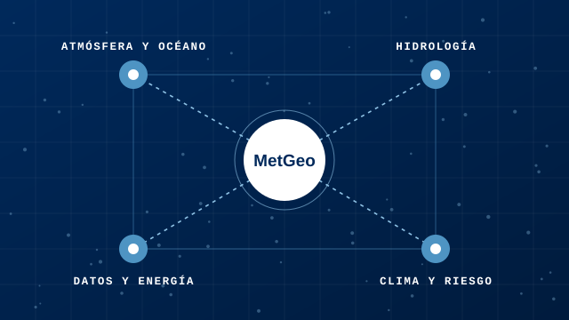

Decidir con conocimiento
Colaborar en la toma de decisiones sobre el territorio con información geofísica robusta, trazable y fácil de entender.
Nosotros
MetGeo SpA nació en Concepción en 2026. Venimos de la Universidad de Concepción y de centros de investigación como CIEP, IMO y COPAS Coastal.
Quiénes somos
Somos geofísicos con experiencia en distintas áreas. Por eso un mismo proyecto puede abarcar la atmósfera, el océano, el agua y el clima sin cambiar de equipo.

Nuestro propósito
Poner el conocimiento geofísico al servicio de las decisiones sobre el territorio, y compartirlo con quien lo necesite.
Lo que nos mueve
Colaborar en la toma de decisiones sobre el territorio con información geofísica robusta, trazable y fácil de entender.
Divulgamos ciencia en Instagram, publicamos noticias científicas cada día y mantenemos un monitor meteorológico abierto.
Apoyar la adaptación al cambio climático, la gestión responsable del agua y la transición energética.
Construimos nuestras propias herramientas: modelos en supercomputación, flujos de datos automáticos y tableros que se actualizan solos.
Capacitamos a equipos técnicos en hidrología, modelación y programación para que sigan usando lo que construimos juntos.
Resultados reproducibles, validados con mediciones y con sus limitaciones explicadas, como en la investigación y la docencia de donde venimos.
Equipo
Cuatro geofísicos con experiencia en modelación numérica, análisis de datos y ciencias de la Tierra. A través de la asesoría y la consultoría, aportamos soluciones técnicas basadas en el conocimiento geofísico.
Geofísico · Modelación oceánica y atmosférica
Geofísico de la Universidad de Concepción. Modela la costa y la atmósfera con CROCO y WRF en infraestructura de alto rendimiento (NLHPC), y desarrolló el monitor meteorológico de MetGeo y plataformas de pronóstico MOS.
GitHub: Heszo ↗Magíster en Geofísica · Modelación numérica
Geofísico especializado en modelación numérica, análisis de datos y resiliencia climática, con experiencia en investigación científica y docencia. Desarrolla soluciones técnicas para la sustentabilidad y la transición energética.
GitHub: IPartarrieu ↗Geofísico · Hidrología e hidrogeología
Analiza variables hidrológicas e hidrometeorológicas, balance hídrico, recarga y flujo subterráneo. Desarrolla modelos numéricos hidrológicos, hidrogeológicos e hidráulicos, y dicta capacitaciones técnicas.
Geofísico · Magíster en Ciencias · Climatología aplicada
Geofísico de la Universidad de Concepción y Magíster en Ciencias de la Universidad Austral de Chile. Estudia eventos extremos, períodos de retorno, tendencias y escenarios futuros para evaluar riesgos climáticos y apoyar la planificación territorial.
Si tu proyecto necesita una mirada geofísica, conversemos.